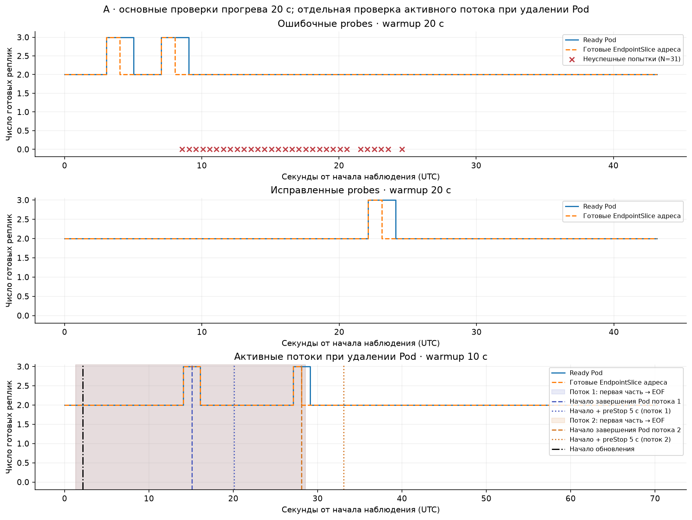
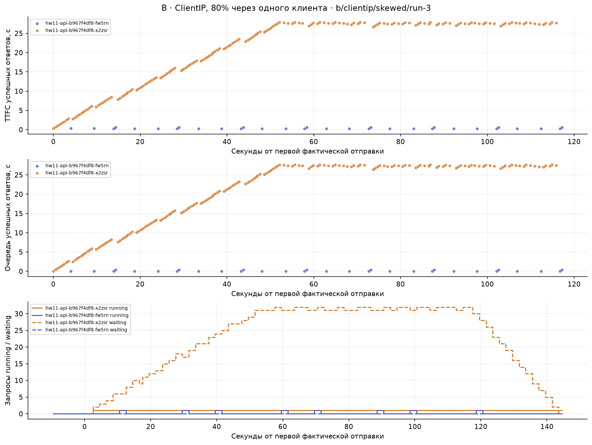
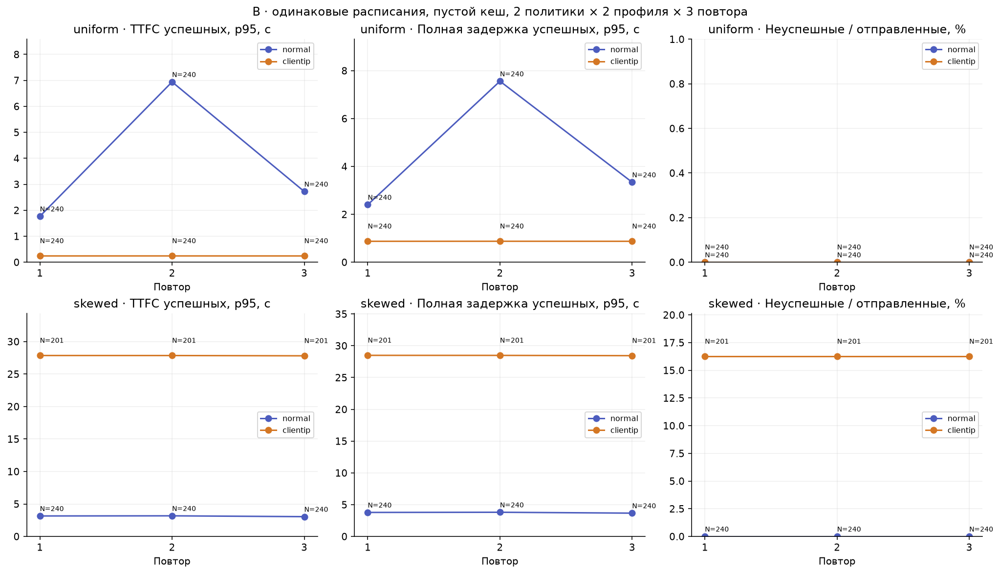
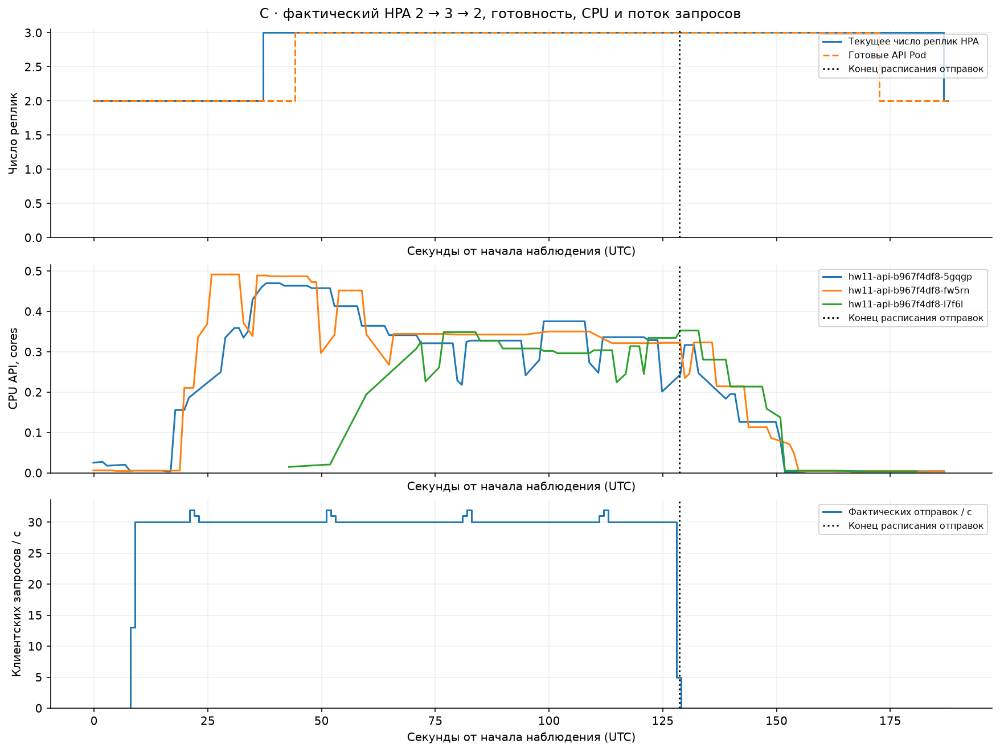

MLOPS-26 · ДЗ 11 · CPU-стенд
Прогрев, горячая реплика и масштабирование
Данные из локального Kubernetes. Backend: simulated. Сохранено файлов завершённых нагрузочных прогонов B: 12 из 12.
Отчёт построен повторно из сохранённых JSON/JSONL; отсутствие файла отображается как пробел, а не заменяется вымышленным результатом. Отсутствие champion принято по условиям работы; веса модели и переобучение для этого CPU-стенда не требуются.
Исходные условия: ../../course_tasks/hw11/homework11.html. Репозиторий: IvanKaruzin/MLOps; точный итоговый коммит сообщает результат push. Единый журнал попыток: requests.jsonl; машиночитаемые итоги: summary.json; собственные проверки: checks.json.
1. Стенд и воспроизводимость
Продолжен FastAPI-сервис ДЗ 8–10 через отдельный режим --backend simulated. Старые stub/transformers API сохранены. Deployment, ConfigMap, два Service, три разных probes, CPU/RAM limits и HPA заданы Helm-чартом. Отдельный kind работает в профиле Colima mlops-hw11; ресурсы других профилей не используются.
Источник имитируемого артефакта — read-only ConfigMap с файлами A/B. До объявления готовности процесс проверяет SHA-256, schema и версию; ответ сообщает фактически загруженные model_version и artifact_sha256. Request ID, session ID, Pod и видимый сервером source IP сохраняются в JSON-логах; метрики не содержат request/session ID. Авторитетная история передаётся целиком в messages, поэтому локальный prefix cache не является хранилищем диалога.
Параметры CPU-имитатора: OpenSSL pbkdf2_hmac('sha256', ...) в ограниченном пуле потоков; hit = 75 000, miss = 700 000, chunk = 25 000 итераций. Очередь ограничена 32 ожидающими, running = 1 на Pod, queue timeout = 30 с; LRU prefix cache = 16 записей. Ключ — SHA-256 первого сообщения, иначе первых 128 символов prompt. Поток сохраняет compute slot до завершения; отменённая CPU-задача удерживает слот до физического окончания thread job. В основных B: четыре части ответа, задержка 0,2 с между выдачей частей, 2 запроса/с, 120 с arrivals (240 запланированных запросов). Фактические values/config каждого прогона являются источником настроек; они приоритетнее этого описания.
Одна API-реплика: CPU request 250m / limit 1 core, RAM 128 / 256 MiB. Prometheus: retention 2 ч / 256 MB, том ≤512 MiB; Grafana ≤128 MiB; API tmp ≤16 MiB. Основной прогрев 20 с; отдельный drain-proof использует явно сохранённые 10 с. PreStop снимает readiness, затем 5 с обслуживает остаточный трафик распространения EndpointSlice; SIGTERM прекращает новый admission, uvicorn даёт активным ответам до 50 с внутри grace period 60 с.
{
"kubernetes": "v1.34.0",
"architecture": "arm64",
"container_runtime": "containerd://2.1.3",
"docker": "29.5.2",
"cpus": 4,
"memory_bytes": 6197379072,
"host_free_bytes": 665169985536,
"tools": {
"kubectl": "v1.34.1",
"kind": "v0.30.0",
"helm": "v3.19.0",
"checksums_verified": true
},
"actual_vm_disks": "Filesystem Size Used Avail Use% Mounted on\n/dev/root 19G 864M 18G 5% /\n/dev/vdb1 12G 2.7G 8.5G 24% /var/lib/docker\n",
"final_disk": "Filesystem Size Used Avail Use% Mounted on\n/dev/root 19G 864M 18G 5% /\n/dev/vdb1 12G 4.3G 6.9G 39% /var/lib/docker",
"final_docker_disk": {
"returncode": 0,
"stdout": "TYPE TOTAL ACTIVE SIZE RECLAIMABLE\nImages 3 1 1.749GB 32.27MB (1%)\nContainers 1 1 3.609MB 0B (0%)\nLocal Volumes 1 1 2.772GB 0B (0%)\nBuild Cache 14 0 75.06MB 29.95MB"
},
"image": {
"image_index_sha256": "072e40c1b4949bf1ca82472f10bad7c5505754b179c3e94c18438268bbdb2832",
"image_config_sha256": "3be73d7a6ca821e9f24b7a997d01daae7ce2e77c31c4c38dcc58384753fe0c28"
},
"final_pod_image_ids": [
{
"pod": "hw11-api-69544b59f-5ptw4",
"image_ids": [
"sha256:3be73d7a6ca821e9f24b7a997d01daae7ce2e77c31c4c38dcc58384753fe0c28"
]
},
{
"pod": "hw11-api-69544b59f-kdbsn",
"image_ids": [
"sha256:3be73d7a6ca821e9f24b7a997d01daae7ce2e77c31c4c38dcc58384753fe0c28"
]
}
]
}
Подтверждение ресурсов до запуска: environment-before.json; после: environment-after.json; сборка и discovery: setup.json; финальная сборка: image-build.json.
Итоговая проверка реальных targets и загруженного дашборда: monitoring-validation.json; экспорт Grafana API: grafana-export.json.
Удаление собственного стенда проверено: cleanup.json. Исходный Docker context восстановлен; остальные профили Colima сохранены.
Запуск и удаление: инструкция README; Helm-чарт; ../../deploy/hw11/Dockerfile; ../../requirements-hw11.lock.
make install-hw11 make up-hw11 make check-hw11 make experiments-hw11 make report-hw11 make down-hw11 # Полное удаление только профиля ДЗ-11: .venv-hw11/bin/python scripts/hw11.py down --delete-vm
2. Метод измерения и полнота
Клиент измеряет интервалы монотонными часами: TTFC = first_chunk − send, full = end − send; inter-chunk latency — среднее N−1 интервалов между N частями. Для одной части значение отсутствует. UTC применяется только для общей линии времени; часы разных процессов не вычитаются. Генератор open-loop следует абсолютному расписанию, создаёт новое HTTP-соединение на запрос и явно сохраняет planned/actual send, lag и unsent при переполнении клиентского backlog. Четыре клиентских Pod имеют разные IP. Каждая попытка имеет свой attempt ID; повторы не объединяются с исходной попыткой.
Успех требует HTTP 200, корректного final marker, ожидаемого количества частей и чистого окончания потока. Отказ до заголовков, обрыв, timeout, connection error и неотправленный запрос учитываются раздельно. p50/p95 приведены только для completed. Доли error/timeout/rejected делятся на sent; unsent — на planned. Клиентская полная длительность включает чтение конца ответа. Backend-гистограмма фиксирует успешное серверное завершение; небольшая сетевая разница ожидаема.
| Прогон | Planned | Sent | N успехов | TTFC p50, с | TTFC p95, с | Full p50, с | Full p95, с | Отказы | Обрывы | Timeout | Ошибки | Unsent |
|---|---|---|---|---|---|---|---|---|---|---|---|---|
| a/bad-rollout | 35 | 35 | 35 | 0.08947 | 0.2131 | 0.148 | 0.2689 | 0 | 0 | 0 | 0 | 0 |
| a/drain-proof/background | 60 | 60 | 60 | 0.08826 | 13.77 | 0.1448 | 13.83 | 0 | 0 | 0 | 0 | 0 |
| a/drain-proof | 2 | 2 | 2 | 1.138 | 1.139 | 28.4 | 28.4 | 0 | 0 | 0 | 0 | 0 |
| a/faulty | 70 | 70 | 39 | 0.08933 | 0.207 | 0.1472 | 0.2629 | 31 | 0 | 0 | 0 | 0 |
| a/fixed | 70 | 70 | 70 | 0.07357 | 0.1427 | 0.1301 | 0.201 | 0 | 0 | 0 | 0 | 0 |
| a/forced-kill/recovery | 10 | 10 | 10 | 0.08966 | 0.2037 | 0.1477 | 0.2601 | 0 | 0 | 0 | 0 | 0 |
| a/replacement/after | 2 | 2 | 2 | 0.1552 | 0.1622 | 0.181 | 0.1877 | 0 | 0 | 0 | 0 | 0 |
| a/replacement/before | 2 | 2 | 2 | 0.1595 | 0.1685 | 0.1869 | 0.1968 | 0 | 0 | 0 | 0 | 0 |
| a/rollback | 10 | 10 | 10 | 0.08947 | 0.09312 | 0.1461 | 0.1533 | 0 | 0 | 0 | 0 | 0 |
| a/rollout/background | 60 | 60 | 60 | 0.08691 | 9.078 | 0.145 | 9.133 | 0 | 0 | 0 | 0 | 0 |
| b/calibration | 30 | 30 | 30 | 3.784 | 8.05 | 4.42 | 8.685 | 0 | 0 | 0 | 0 | 0 |
| b/clientip/skewed/run-1 | 240 | 240 | 201 | 20.78 | 27.86 | 21.41 | 28.49 | 39 | 0 | 0 | 0 | 0 |
| b/clientip/skewed/run-2 | 240 | 240 | 201 | 20.65 | 27.85 | 21.28 | 28.48 | 39 | 0 | 0 | 0 | 0 |
| b/clientip/skewed/run-3 | 240 | 240 | 201 | 20.72 | 27.81 | 21.35 | 28.44 | 39 | 0 | 0 | 0 | 0 |
| b/clientip/uniform/run-1 | 240 | 240 | 240 | 0.2303 | 0.2415 | 0.8625 | 0.8735 | 0 | 0 | 0 | 0 | 0 |
| b/clientip/uniform/run-2 | 240 | 240 | 240 | 0.2328 | 0.2419 | 0.8639 | 0.8751 | 0 | 0 | 0 | 0 | 0 |
| b/clientip/uniform/run-3 | 240 | 240 | 240 | 0.2298 | 0.2411 | 0.8615 | 0.8734 | 0 | 0 | 0 | 0 | 0 |
| b/no-skew | 10 | 10 | 10 | 0.2393 | 0.3532 | 0.8717 | 0.9784 | 0 | 0 | 0 | 0 | 0 |
| b/normal/skewed/run-1 | 240 | 240 | 240 | 0.9605 | 3.154 | 1.593 | 3.779 | 0 | 0 | 0 | 0 | 0 |
| b/normal/skewed/run-2 | 240 | 240 | 240 | 1.179 | 3.175 | 1.811 | 3.806 | 0 | 0 | 0 | 0 | 0 |
| b/normal/skewed/run-3 | 240 | 240 | 240 | 0.9287 | 3.047 | 1.561 | 3.667 | 0 | 0 | 0 | 0 | 0 |
| b/normal/uniform/run-1 | 240 | 240 | 240 | 0.5975 | 1.767 | 1.229 | 2.403 | 0 | 0 | 0 | 0 | 0 |
| b/normal/uniform/run-2 | 240 | 240 | 240 | 1.55 | 6.941 | 2.175 | 7.56 | 0 | 0 | 0 | 0 | 0 |
| b/normal/uniform/run-3 | 240 | 240 | 240 | 0.9357 | 2.721 | 1.565 | 3.342 | 0 | 0 | 0 | 0 | 0 |
| c/alerts/load | 2400 | 2400 | 201 | 29.96 | 30.13 | 31.09 | 31.25 | 2199 | 0 | 0 | 0 | 0 |
| c/hot-replica | 2250 | 2250 | 1567 | 1.73 | 1.785 | 1.76 | 1.816 | 683 | 0 | 0 | 0 | 0 |
| c/hpa/load | 3600 | 3600 | 3600 | 0.03132 | 0.1134 | 0.06138 | 0.1435 | 0 | 0 | 0 | 0 | 0 |
| a/rollout/long-stream.json | 1 | 1 | 1 | 1.135 | 1.135 | 28.33 | 28.33 | 0 | 0 | 0 | 0 | 0 |
| a/forced-kill/forced-stream.json | 1 | 1 | 0 | — | — | — | — | 0 | 1 | 0 | 0 | 0 |
Единый журнал содержит 11493 попыток из 29 исходных файлов; уникальные attempt ID и терминальные исходы проверены, несовпадения входят в data_errors. Архивы A-initial и smoke не смешиваются с основными данными. В каждой строке сохранены source_file и experiment: requests.jsonl.
Полные знаменатели, доли, lag и распределение по Pod находятся в summary.json. Сырые попытки доступны по каталогам A, B, C.
3. Опыт A — прогрев, выпуск и восстановление
Проверка: PASS. Гипотеза: HTTP-процесс может отвечать probes раньше, чем готов backend; правильный readiness/startup исключает такой Pod из рабочего Service. Исходный дефект воспроизведён отдельным brokenProbes=true; исправление связывает probes с проверенным артефактом и окончанием прогрева. Liveness отдельно отвечает за живость HTTP.
Доказательства до/после: a/faulty/warmup-assertion.json, a/fixed/warmup-assertion.json; Ready/EndpointSlice и полный журнал запросов сохранены в обоих каталогах. В исправленном режиме отсутствие ранних backend-запросов проверяется отдельно от отсутствия ошибок на уже прогретых репликах.
В исходном A→B заранее открыт длительный поток к конкретной старой реплике, а основной поток запросов идёт через Service. Границы длительного ответа и начало upgrade записаны в a/rollout/long-stream.json. Этот поток пересёк начало обновления и завершился без обрыва, но его Pod был удалён уже после окончания ответа: этот прогон доказывает пересечение rollout, а не удержание активного потока при завершении процесса. Отдельный drain-proof ниже закрывает это ограничение без изменения backend и измерений B/C. Намеренно неготовая B проверяется отдельно: a/bad-rollout; после управляемого rollback фактическая A/хеш проверены в a/rollback/requests.jsonl.
Дополнительная проверка graceful termination: до upgrade открываются 28-секундные потоки на обеих A-репликах. При том же backend прогрев новых Pod задан 10 с, чтобы удаление старой реплики пересекло активный ответ. Сохраняются два длительных ответа, 60 фоновых Service-попыток, Ready/EndpointSlice и время удаления Pod. Требование — все попытки completed без 5xx, а хотя бы один старый поток заканчивается позже deletion + preStop 5 с + запас 1 с и раньше окончания grace period 60 с. Начало завершения вычисляется как Kubernetes deletionTimestamp минус deletionGracePeriodSeconds и сверяется с первым наблюдением terminating Pod. Сам raw deletionTimestamp — дедлайн удаления, а не начало завершения. Время начала + preStop — оценка ожидаемого SIGTERM по конфигурации, а не отдельное измерение доставки сигнала. Доказательства: a/drain-proof/proof.json, a/drain-proof/requests.jsonl, a/drain-proof/background/requests.jsonl.
{
"passed": true,
"warmup_seconds": 10,
"upgrade_utc": 1794772216.079817,
"termination_grace_seconds": 60,
"prestop_seconds": 5,
"uvicorn_grace_seconds": 50,
"streams": [
{
"request_id": "drain-proof-long-0",
"pod": "hw11-api-9d8b574dc-mt9q5",
"outcome": "completed",
"first_chunk_utc": 1794772215.2140841,
"end_utc": 1794772242.478137,
"deletion_utc": 1794772229.0,
"expected_sigterm_utc": 1794772234.0,
"deletion_to_finish_seconds": 13.478137016296387,
"finished_after_prestop": true,
"termination_started_utc": 1794772229.0,
"deletion_deadline_utc": 1794772289.0,
"deletion_grace_seconds": 60,
"first_observed_terminating_utc": 1794772229.980989
},
{
"request_id": "drain-proof-long-1",
"pod": "hw11-api-9d8b574dc-sx2hw",
"outcome": "completed",
"first_chunk_utc": 1794772215.2117388,
"end_utc": 1794772242.478464,
"deletion_utc": 1794772242.0,
"expected_sigterm_utc": 1794772247.0,
"deletion_to_finish_seconds": 0.47846388816833496,
"finished_after_prestop": false,
"termination_started_utc": 1794772242.0,
"deletion_deadline_utc": 1794772302.0,
"deletion_grace_seconds": 60,
"first_observed_terminating_utc": 1794772242.0173912
}
],
"background": {
"planned": 60,
"sent": 60,
"successful": 60,
"counts": {
"completed": 60,
"rejected": 0,
"interrupted": 0,
"timeout": 0,
"connection_error": 0,
"error": 0,
"unsent": 0
},
"ttfc_p50_seconds": 0.08826422900028774,
"ttfc_p95_seconds": 13.773616497399864,
"full_p50_seconds": 0.1447519859998465,
"full_p95_seconds": 13.829759478450017,
"pods": {
"hw11-api-69544b59f-5ptw4": 33,
"hw11-api-69544b59f-kdbsn": 19,
"hw11-api-9d8b574dc-mt9q5": 3,
"hw11-api-9d8b574dc-sx2hw": 5
}
}
}
Принудительный SIGKILL выполняется через containerd на kind node, а не игнорируемым сигналом namespace PID1 изнутри контейнера. Сохранены оборванная попытка, идентичность контейнера до/после и восстановление: a/forced-kill. Отдельная замена Pod и продолжение двух различимых диалогов: a/replacement. Ограничение: штатный rollout без ошибок подтверждён только для зафиксированных нагрузки, продолжительности ответа и тайм-аутов.

4. Опыт B — привязка, очередь и локальный кеш
Проверка: PASS; найдено 12/12 основных прогонов. Гипотеза: ClientIP сохраняет локальность prefix cache, но при 80% запросов от одного клиента перегружает закреплённый Pod, когда другая реплика имеет свободную ёмкость. Сравниваются Service с ClientIP и без affinity над той же парой Pod; HPA выключен, keep-alive выключен, кеш перед каждым run пуст. При равномерном профиле четыре клиента делят отправки поровну; при skewed один даёт 80%. Workload hashes, запросы, длины контекста, лимиты ответа и расписания совпадают между политиками.
Сеть, IP и Service settings: b/network.json. source_ip в серверных request logs позволяет сверить фактический адрес, видимый репликой, с Pod IP генератора. Причину маршрутизации проверяем по traces, а не предполагаем round-robin на каждом HTTP-запросе.
Прямое доказательство адреса, видимого самому механизму ClientIP на node: b/affinity-source-ip.json; сохранённая NAT-таблица: b/iptables-nat.txt. Записи /proc/net/xt_recent/KUBE-SEP-* сопоставляются с client Pod IP из network/config, а правила DNAT — с IP действительных API Pod. Это дополняет source_ip в HTTP-логах и позволяет отделить адрес affinity-механизма от предположений о NAT.
Зафиксированные настройки kube-proxy: clusterCIDR: 10.244.0.0/16; masqueradeAll: false; mode: iptables; masqueradeAll: false. При новых соединениях обычный Service распределяет выбор backend через сетевую политику, а ClientIP использует видимый источнику трафика адрес. Это сравнение относится к данному iptables/Pod-network стенду.
От клиентского IP к Pod: проверка трассой
Для каждой комбинации ниже показан последний сохранённый repeat (в завершённой работе — третий). Количество запросов берётся из клиентского журнала; наблюдённый source_ip — только из серверных request_received/request_finished с тем же request_id. Отсутствующие финальные log samples не восстанавливаются догадками. Mismatch означает, что наблюдённый набор source IP отличается от клиентского Pod IP.
| Политика | Профиль | Repeat | Клиент | Pod IP клиента | Backend Pod | Запросов | source_ip сервера | Сопоставлено ID | Mismatch ID |
|---|---|---|---|---|---|---|---|---|---|
| normal | uniform | 3 | hw11-client-0 | 10.244.0.31 | hw11-api-b967f4df8-x2zsr | 31 | 10.244.0.31 | 31 | 0 |
| normal | uniform | 3 | hw11-client-1 | 10.244.0.32 | hw11-api-b967f4df8-fw5rn | 33 | 10.244.0.32 | 33 | 0 |
| normal | uniform | 3 | hw11-client-2 | 10.244.0.33 | hw11-api-b967f4df8-fw5rn | 33 | 10.244.0.33 | 33 | 0 |
| normal | uniform | 3 | hw11-client-3 | 10.244.0.34 | hw11-api-b967f4df8-x2zsr | 29 | 10.244.0.34 | 29 | 0 |
| normal | uniform | 3 | hw11-client-0 | 10.244.0.31 | hw11-api-b967f4df8-fw5rn | 29 | 10.244.0.31 | 29 | 0 |
| normal | uniform | 3 | hw11-client-2 | 10.244.0.33 | hw11-api-b967f4df8-x2zsr | 27 | 10.244.0.33 | 27 | 0 |
| normal | uniform | 3 | hw11-client-1 | 10.244.0.32 | hw11-api-b967f4df8-x2zsr | 27 | 10.244.0.32 | 27 | 0 |
| normal | uniform | 3 | hw11-client-3 | 10.244.0.34 | hw11-api-b967f4df8-fw5rn | 31 | 10.244.0.34 | 31 | 0 |
| normal | skewed | 3 | hw11-client-0 | 10.244.0.31 | hw11-api-b967f4df8-fw5rn | 97 | 10.244.0.31 | 97 | 0 |
| normal | skewed | 3 | hw11-client-0 | 10.244.0.31 | hw11-api-b967f4df8-x2zsr | 95 | 10.244.0.31 | 95 | 0 |
| normal | skewed | 3 | hw11-client-1 | 10.244.0.32 | hw11-api-b967f4df8-fw5rn | 11 | 10.244.0.32 | 11 | 0 |
| normal | skewed | 3 | hw11-client-2 | 10.244.0.33 | hw11-api-b967f4df8-fw5rn | 8 | 10.244.0.33 | 8 | 0 |
| normal | skewed | 3 | hw11-client-2 | 10.244.0.33 | hw11-api-b967f4df8-x2zsr | 8 | 10.244.0.33 | 8 | 0 |
| normal | skewed | 3 | hw11-client-3 | 10.244.0.34 | hw11-api-b967f4df8-fw5rn | 8 | 10.244.0.34 | 8 | 0 |
| normal | skewed | 3 | hw11-client-3 | 10.244.0.34 | hw11-api-b967f4df8-x2zsr | 8 | 10.244.0.34 | 8 | 0 |
| normal | skewed | 3 | hw11-client-1 | 10.244.0.32 | hw11-api-b967f4df8-x2zsr | 5 | 10.244.0.32 | 5 | 0 |
| clientip | uniform | 3 | hw11-client-0 | 10.244.0.31 | hw11-api-b967f4df8-x2zsr | 60 | 10.244.0.31 | 60 | 0 |
| clientip | uniform | 3 | hw11-client-1 | 10.244.0.32 | hw11-api-b967f4df8-fw5rn | 60 | 10.244.0.32 | 60 | 0 |
| clientip | uniform | 3 | hw11-client-2 | 10.244.0.33 | hw11-api-b967f4df8-x2zsr | 60 | 10.244.0.33 | 60 | 0 |
| clientip | uniform | 3 | hw11-client-3 | 10.244.0.34 | hw11-api-b967f4df8-fw5rn | 60 | 10.244.0.34 | 60 | 0 |
| clientip | skewed | 3 | hw11-client-0 | 10.244.0.31 | hw11-api-b967f4df8-x2zsr | 192 | 10.244.0.31 | 192 | 0 |
| clientip | skewed | 3 | hw11-client-1 | 10.244.0.32 | hw11-api-b967f4df8-fw5rn | 16 | 10.244.0.32 | 16 | 0 |
| clientip | skewed | 3 | hw11-client-2 | 10.244.0.33 | hw11-api-b967f4df8-x2zsr | 16 | 10.244.0.33 | 16 | 0 |
| clientip | skewed | 3 | hw11-client-3 | 10.244.0.34 | hw11-api-b967f4df8-fw5rn | 16 | 10.244.0.34 | 16 | 0 |
Прямые доказательства mapping: b/normal/uniform/run-3 requests; hw11-api-b967f4df8-fw5rn.log; hw11-api-b967f4df8-x2zsr.log
b/normal/skewed/run-3 requests; hw11-api-b967f4df8-fw5rn.log; hw11-api-b967f4df8-x2zsr.log
b/clientip/uniform/run-3 requests; hw11-api-b967f4df8-fw5rn.log; hw11-api-b967f4df8-x2zsr.log
b/clientip/skewed/run-3 requests; hw11-api-b967f4df8-fw5rn.log; hw11-api-b967f4df8-x2zsr.log.
| Трафик | Политика | Повторов | Run p95 TTFC, с: медиана [min…max] | Run p95 full, с: медиана [min…max] | Успех / sent | Отказы | Обрывы + ошибки | Timeout | Cache hits/misses; доля hit |
|---|---|---|---|---|---|---|---|---|---|
| uniform | normal | 3 | 2.721 [1.767 … 6.941] | 3.342 [2.403 … 7.56] | 720/720 | 0 | 0 | 0 | 696/24; hit rate=0.9667 |
| uniform | clientip | 3 | 0.2415 [0.2411 … 0.2419] | 0.8735 [0.8734 … 0.8751] | 720/720 | 0 | 0 | 0 | 708/12; hit rate=0.9833 |
| skewed | normal | 3 | 3.154 [3.047 … 3.175] | 3.779 [3.667 … 3.806] | 720/720 | 0 | 0 | 0 | 696/24; hit rate=0.9667 |
| skewed | clientip | 3 | 27.85 [27.81 … 27.86] | 28.48 [28.44 … 28.49] | 603/720 | 117 | 0 | 0 | 591/12; hit rate=0.9801 |
Отдельно сохраняем случай ClientIP + uniform: b/clientip/uniform/run-3; запросы по Pod: {"hw11-api-b967f4df8-fw5rn": 120, "hw11-api-b967f4df8-x2zsr": 120}; p95 TTFC этого run = 0.2411 с, успешных = 240/240. При закреплении четырёх IP по схеме 2+2 равномерный профиль остаётся сбалансированным; локальность кеша и фазовое расписание arrivals могут уменьшить очередь и задержку относительно случайного выбора backend на новых соединениях. Это объяснение проверяется распределением и кеш-промахами; отдельно разделить влияние локальности и фаз без дополнительного опыта нельзя. Этот результат учитывается наравне с горячим профилем; обычный Service не объявляется лучшим при любой нагрузке.
Сохранённый результат без ожидаемого 80%-перекоса распределения: b/normal/skewed/run-1; фактические запросы по Pod: {"hw11-api-b967f4df8-fw5rn": 119, "hw11-api-b967f4df8-x2zsr": 121}. При том же 80%-клиенте отсутствие ClientIP и новые соединения допускают распределение на обе реплики; степень баланса оценивается этими числами, а не обещается сетевой реализацией.
Выбор по тяжёлому профилю: медиана p95 TTFC трёх runs: normal = 3.154 с, ClientIP = 27.85 с; доля неуспехов/sent: 0 и 0.1625. Промахи кеша среди completed: 24 и 12. Обычный Service подтверждён как исправление горячего профиля: задержка ниже без роста доли неуспехов. Три повтора описывают этот стенд, но не дают универсальной гарантии для других сетей и workloads.
Диагностика b/no-skew использует ClientIP и низкую частоту: она проверяет отсутствие очереди ниже ёмкости; это не доказательство равномерного распределения. Калибровка b/calibration/calibration-decision.json требует одновременных waiting>0 у одной реплики и running=0 у другой перед запуском 12 основных прогонов.
Проверяемое исправление — обычный Service без постоянной привязки диалога к Pod. Его измеренный эффект оценивается отдельно для каждого профиля по таблице и трём repeats. В таблице hits/misses считаются по completed с известным cache_hit, hit rate = hits/(hits+misses); отказавшие запросы без lookup не включаются в этот знаменатель. Число дополнительных промахов при обычном Service сравнивается на том же расписании: оно показывает измеренную цену копирования префикса на другую реплику, но не размер реального KV-кеша. Цена решения — возможный пересчёт префикса на второй реплике; истории диалогов это не разрушает, потому что полный контекст находится в запросе. Числа относятся к искусственным hit/miss costs. На настоящем engine отдельно проверяются prefill/decode, batch admission, eviction, KV-память и cache-aware routing.


Сравнение classic histogram с тем же набором ответов
Для каждого B run сохранены cumulative buckets до arrivals и после завершения всех запросов, без смены Pod и чужого workload. Разность bucket-счётчиков суммируется по le; проверяются неизменность пары Pod, отсутствие counter reset, совпадение delta_count и N completed клиента. p50/p95 гистограммы используют линейную интерполяцию внутри bucket, точные серверные квантили — поля done, точные клиентские — monotonic durations. Разница сети и аппроксимации не скрывается.
PromQL, sliding-window оговорка и alert expressions: ../../deploy/hw11/monitoring/promql.md; ../../deploy/hw11/monitoring/alerts.yml. Перцентиль рассчитывается после агрегации с сохранением le, например:
histogram_quantile(0.95, sum by (le, pod) (rate(hw11_ttfc_seconds_bucket[1m])))
| Run | Метрика | Cohort верен | Delta N | Client p50, с | Server p50, с | Histogram p50, с | Client p95, с | Server p95, с | Histogram p95, с | Prom cohort верен | Prom p95, с |
|---|---|---|---|---|---|---|---|---|---|---|---|
| b/normal/uniform/run-1 | ttfc | 1 | 240 | 0.5975 | 0.5959 | 0.6494 | 1.767 | 1.765 | 2.357 | 1 | 2.357 |
| b/normal/uniform/run-1 | full | 1 | 240 | 1.229 | 1.227 | 1.332 | 2.403 | 2.401 | 2.812 | 1 | 2.812 |
| b/normal/uniform/run-2 | ttfc | 1 | 240 | 1.55 | 1.549 | 1.525 | 6.941 | 6.94 | 8.4 | 1 | 8.4 |
| b/normal/uniform/run-2 | full | 1 | 240 | 2.175 | 2.173 | 2.25 | 7.56 | 7.558 | 9 | 1 | 9 |
| b/normal/uniform/run-3 | ttfc | 1 | 240 | 0.9357 | 0.9337 | 0.9377 | 2.721 | 2.72 | 2.883 | 1 | 2.883 |
| b/normal/uniform/run-3 | full | 1 | 240 | 1.565 | 1.562 | 1.643 | 3.342 | 3.34 | 4.56 | 1 | 4.56 |
| b/normal/skewed/run-1 | ttfc | 1 | 240 | 0.9605 | 0.9588 | 1.016 | 3.154 | 3.152 | 3.231 | 1 | 3.231 |
| b/normal/skewed/run-1 | full | 1 | 240 | 1.593 | 1.591 | 1.689 | 3.779 | 3.776 | 4.8 | 1 | 4.8 |
| b/normal/skewed/run-2 | ttfc | 1 | 240 | 1.179 | 1.176 | 1.139 | 3.175 | 3.172 | 3.882 | 1 | 3.882 |
| b/normal/skewed/run-2 | full | 1 | 240 | 1.811 | 1.808 | 1.848 | 3.806 | 3.803 | 4.941 | 1 | 4.941 |
| b/normal/skewed/run-3 | ttfc | 1 | 240 | 0.9287 | 0.9276 | 0.9782 | 3.047 | 3.045 | 3.6 | 1 | 3.6 |
| b/normal/skewed/run-3 | full | 1 | 240 | 1.561 | 1.559 | 1.629 | 3.667 | 3.664 | 4.971 | 1 | 4.971 |
| b/clientip/uniform/run-1 | ttfc | 1 | 240 | 0.2303 | 0.2282 | 0.3 | 0.2415 | 0.2372 | 0.39 | 1 | 0.39 |
| b/clientip/uniform/run-1 | full | 1 | 240 | 0.8625 | 0.8597 | 1.15 | 0.8735 | 0.8691 | 1.465 | 1 | 1.465 |
| b/clientip/uniform/run-2 | ttfc | 1 | 240 | 0.2328 | 0.2307 | 0.3 | 0.2419 | 0.2375 | 0.39 | 1 | 0.39 |
| b/clientip/uniform/run-2 | full | 1 | 240 | 0.8639 | 0.8615 | 1.15 | 0.8751 | 0.8714 | 1.465 | 1 | 1.465 |
| b/clientip/uniform/run-3 | ttfc | 1 | 240 | 0.2298 | 0.2279 | 0.3 | 0.2411 | 0.2369 | 0.39 | 1 | 0.39 |
| b/clientip/uniform/run-3 | full | 1 | 240 | 0.8615 | 0.8587 | 1.15 | 0.8734 | 0.8701 | 1.465 | 1 | 1.465 |
| b/clientip/skewed/run-1 | ttfc | 1 | 201 | 20.78 | 20.78 | 20.43 | 27.86 | 27.85 | 45.26 | 1 | 45.26 |
| b/clientip/skewed/run-1 | full | 1 | 201 | 21.41 | 21.41 | 21 | 28.49 | 28.49 | 45.32 | 1 | 45.32 |
| b/clientip/skewed/run-2 | ttfc | 1 | 201 | 20.65 | 20.65 | 20.23 | 27.85 | 27.85 | 45.23 | 1 | 45.23 |
| b/clientip/skewed/run-2 | full | 1 | 201 | 21.28 | 21.28 | 20.93 | 28.48 | 28.48 | 45.32 | 1 | 45.32 |
| b/clientip/skewed/run-3 | ttfc | 1 | 201 | 20.72 | 20.72 | 20.23 | 27.81 | 27.81 | 45.23 | 1 | 45.23 |
| b/clientip/skewed/run-3 | full | 1 | 201 | 21.35 | 21.35 | 21 | 28.44 | 28.44 | 45.32 | 1 | 45.32 |
Ограничение разрешения гистограммы: в ClientIP + skewed медиана run p95 по сырым клиентским длительностям = 27.85 с, по точным серверным длительностям = 27.85 с, а интерполяция classic histogram даёт 45.23 с. Широкий bucket 24…48 с распределяет наблюдения линейно внутри границ, хотя реальные значения сосредоточены в части интервала. Значение 45.23 с является оценкой гистограммы и не используется как фактически измеренный p95. Выбор политики опирается на сырые клиентские данные и долю отказов. В следующей версии следует добавить границы 26/28/30/32 с; текущие результаты и buckets сохранены без изменения. Численная погрешность аппроксимации не меняет подтверждённое совпадение набора ответов и delta_count.
5. Опыт C — HPA и два алерта
Проверка: PASS. Гипотеза: вычислительная нагрузка увеличит среднюю CPU-утилизацию выше target, HPA добавит третью реплику, после снижения arrivals вернёт минимум с учётом stabilization window. Backend и стоимость вычислений те же, что в B; CPU pressure меняется частотой запросов и задержкой между частями, а не другой реализацией имитатора. HPA autoscaling/v2: минимум 2, максимум 3, target 70% относительно CPU requests, scale-down stabilization 30 с.
Условия HPA и доступность resource metrics API: c/hpa-before.json, c/metrics-api.json; измеренный цикл, создание/готовность Pod и scale-down: c/hpa/timeline.jsonl, c/hpa/scale-down.json. Момент снижения arrivals берётся из абсолютного расписания, а окончание drain клиентов сохраняется отдельно.
{
"transitions": [
{
"utc": 1794770865.0867388,
"replicas": 2,
"ready": 2
},
{
"utc": 1794770902.1969512,
"replicas": 3,
"ready": 2
},
{
"utc": 1794771051.751232,
"replicas": 2,
"ready": 2
}
],
"pods": {
"hw11-api-b967f4df8-5gqgp": {
"created_utc": "2026-11-15T19:27:22Z",
"ready_utc": "2026-11-15T19:27:43Z"
},
"hw11-api-b967f4df8-fw5rn": {
"created_utc": "2026-11-15T18:54:49Z",
"ready_utc": "2026-11-15T18:55:10Z"
},
"hw11-api-b967f4df8-l7f6l": {
"created_utc": "2026-11-15T19:28:07Z",
"ready_utc": "2026-11-15T19:28:28Z"
}
},
"scale_down": {
"observed_three": true,
"load_stopped_utc": 1794770993.678102,
"minimum_observed_utc": 1794771052.688543,
"scale_down_seconds": 59.010441064834595,
"stabilization_seconds": 30,
"hpa": {
"apiVersion": "autoscaling/v2",
"kind": "HorizontalPodAutoscaler",
"metadata": {
"annotations": {
"meta.helm.sh/release-name": "hw11",
"meta.helm.sh/release-namespace": "hw11"
},
"creationTimestamp": "2026-11-15T19:27:07Z",
"labels": {
"app.kubernetes.io/managed-by": "Helm"
},
"name": "hw11-api",
"namespace": "hw11",
"resourceVersion": "8295",
"uid": "c344c844-0a2c-4d6f-aa71-854c026c7e4a"
},
"spec": {
"behavior": {
"scaleDown": {
"policies": [
{
"periodSeconds": 15,
"type": "Pods",
"value": 1
}
],
"selectPolicy": "Max",
"stabilizationWindowSeconds": 30
},
"scaleUp": {
"policies": [
{
"periodSeconds": 15,
"type": "Pods",
"value": 1
}
],
"selectPolicy": "Max",
"stabilizationWindowSeconds": 0
}
},
"maxReplicas": 3,
"metrics": [
{
"resource": {
"name": "cpu",
"target": {
"averageUtilization": 70,
"type": "Utilization"
}
},
"type": "Resource"
}
],
"minReplicas": 2,
"scaleTargetRef": {
"apiVersion": "apps/v1",
"kind": "Deployment",
"name": "hw11-api"
}
},
"status": {
"conditions": [
{
"lastTransitionTime": "2026-11-15T19:27:22Z",
"message": "recommended size matches current size",
"reason": "ReadyForNewScale",
"status": "True",
"type": "AbleToScale"
},
{
"lastTransitionTime": "2026-11-15T19:27:37Z",
"message": "the HPA was able to successfully calculate a replica count from cpu resource utilization (percentage of request)",
"reason": "ValidMetricFound",
"status": "True",
"type": "ScalingActive"
},
{
"lastTransitionTime": "2026-11-15T19:30:36Z",
"message": "the desired replica count is less than the minimum replica count",
"reason": "TooFewReplicas",
"status": "True",
"type": "ScalingLimited"
}
],
"currentMetrics": [
{
"resource": {
"current": {
"averageUtilization": 1,
"averageValue": "4m"
},
"name": "cpu"
},
"type": "Resource"
}
],
"currentReplicas": 2,
"desiredReplicas": 2,
"lastScaleTime": "2026-11-15T19:30:36Z"
}
}
},
"load_window": {
"start_utc": 1794770873.678102,
"stop_utc": 1794770993.678102,
"clients_drained_utc": 1794770993.762105
}
}
Горячий ClientIP-профиль повторён при HPA: c/hot-replica. Средняя CPU может пересечь target, если работа горячего Pod достаточна относительно суммы requests; при низкой средней CPU новая реплика не появится. Даже после scale-out привязанный IP продолжает попадать на прежний Pod, поэтому третья реплика сама по себе не гарантирует снятие очереди; это проверяется traces и running/waiting.
Фактическое распределение горячего прогона ниже строится по идентичности Pod в HTTP-ответах и всем API Pod, наблюдённым в timeline. Поэтому новая готовая реплика с нулём записанных попыток показана явно, а не пропущена. Время создания и первого Ready берётся из Kubernetes; интервал creation → Ready включает запуск и прогрев. Источник: c/hot-replica/requests.jsonl, c/hot-replica/timeline.jsonl.
Наблюдение этого прогона: hw11-api-b967f4df8-ndpcw: Ready через 21 с после создания, 0 из 2250 записанных HTTP-попыток. Другие наблюдённые реплики получили hw11-api-b967f4df8-5gqgp — 150, hw11-api-b967f4df8-fw5rn — 2100. Это фактический случай, когда добавленная готовая ёмкость не разгрузила закреплённых клиентов.
| Pod | Новый в опыте | Попыток | Completed | Rejected | Created UTC | Ready UTC | Creation → Ready, с |
|---|---|---|---|---|---|---|---|
| hw11-api-b967f4df8-5gqgp | 0 | 150 | 150 | 0 | 2026-11-15T19:27:22Z | 2026-11-15T19:27:43Z | 21 |
| hw11-api-b967f4df8-fw5rn | 0 | 2100 | 1417 | 683 | 2026-11-15T18:54:49Z | 2026-11-15T18:55:10Z | 21 |
| hw11-api-b967f4df8-ndpcw | 1 | 0 | 0 | 0 | 2026-11-15T19:31:36Z | 2026-11-15T19:31:57Z | 21 |
{
"available": true,
"service": "hw11-affinity",
"duration_seconds": 75,
"sent": 2250,
"attempts_without_response_pod": 0,
"per_pod": [
{
"pod": "hw11-api-b967f4df8-5gqgp",
"created_utc": "2026-11-15T19:27:22Z",
"ready_utc": "2026-11-15T19:27:43Z",
"new_during_observation": false,
"attempts": 150,
"successful": 150,
"rejected": 0,
"creation_to_ready_seconds": 21.0
},
{
"pod": "hw11-api-b967f4df8-fw5rn",
"created_utc": "2026-11-15T18:54:49Z",
"ready_utc": "2026-11-15T18:55:10Z",
"new_during_observation": false,
"attempts": 2100,
"successful": 1417,
"rejected": 683,
"creation_to_ready_seconds": 21.0
},
{
"pod": "hw11-api-b967f4df8-ndpcw",
"created_utc": "2026-11-15T19:31:36Z",
"ready_utc": "2026-11-15T19:31:57Z",
"new_during_observation": true,
"attempts": 0,
"successful": 0,
"rejected": 0,
"creation_to_ready_seconds": 21.0
}
],
"meaning": "attempt counts use observed HTTP response Pod identities; zero is shown for API Pods present in the timeline but receiving no recorded attempts"
}
Алерты: p95 TTFC >0,8 с при ≥10 успешных наблюдениях за 30 с; доля rejected >5% при ≥20 terminal outcomes за 30 с. Оба имеют for: 10s, evaluation interval 5 с. Реальные inactive/pending/firing/normal состояния и правила: c/alerts/alert-states.json, c/alerts/rules.json. Наличие YAML правила само по себе не считается срабатыванием.

6. Собственные проверки и соответствие условиям
Обязательные live-проверки обращаются к Kubernetes-сервису: прогрев, фактическая загруженная A после отката, восстановление версии и диалога на заменённом Pod. Дополнительно проверяются реальные rejected/interrupted и изоляция двух диалогов с различимыми контрольными строками. Исходный сбой faulty probes сохранён отдельно от исправленного PASS. Unit tests дополняют эти доказательства, а не заменяют их.
{
"passed": true,
"checks": {
"a": {
"passed": true,
"evidence": {
"warmup_original_failure": true,
"warmup_fixed_pass": true,
"rollback_loaded_version": true,
"replacement_and_dialog_recovery": true,
"rejections_and_interrupted_stream": true,
"dialog_isolation": true,
"rollout_zero_errors": true,
"active_stream_graceful_drain": {
"long_streams_completed": 2,
"background_completed": 60,
"warmup_seconds": 10,
"overlapping_streams": [
{
"pod": "hw11-api-9d8b574dc-mt9q5",
"termination_started_utc": 1794772229.0,
"first_observed_terminating_utc": 1794772229.980989,
"deletion_deadline_utc": 1794772289.0,
"stream_finished_utc": 1794772242.478137,
"seconds_after_termination_start": 13.478137016296387
}
]
}
}
},
"b": {
"passed": true,
"evidence": {
"full_runs": 12,
"schedule_hashes": {
"uniform": "3552e1d87e7d7cb99529cf55467ec6ce126d9fba6f91b69e100f4d6d627b56c8",
"skewed": "cd91586eed1399f3a491e3ec0fc1dfe3c7396016871c4c4177e72f47487c04da"
},
"runs": [
{
"policy": "normal",
"traffic": "uniform",
"repeat": 1,
"planned": 240,
"sent": 240,
"successful": 240,
"counts": {
"completed": 240,
"rejected": 0,
"interrupted": 0,
"timeout": 0,
"connection_error": 0,
"error": 0,
"unsent": 0
},
"ttfc_p50_seconds": 0.5975497164997705,
"ttfc_p95_seconds": 1.766971615849979,
"full_p50_seconds": 1.2289903089999825,
"full_p95_seconds": 2.4029150537999606,
"pods": {
"hw11-api-b967f4df8-fw5rn": 120,
"hw11-api-b967f4df8-x2zsr": 120
}
},
{
"policy": "normal",
"traffic": "uniform",
"repeat": 2,
"planned": 240,
"sent": 240,
"successful": 240,
"counts": {
"completed": 240,
"rejected": 0,
"interrupted": 0,
"timeout": 0,
"connection_error": 0,
"error": 0,
"unsent": 0
},
"ttfc_p50_seconds": 1.5501736300000175,
"ttfc_p95_seconds": 6.940821477000281,
"full_p50_seconds": 2.175070720499889,
"full_p95_seconds": 7.560072950400217,
"pods": {
"hw11-api-b967f4df8-fw5rn": 127,
"hw11-api-b967f4df8-x2zsr": 113
}
},
{
"policy": "normal",
"traffic": "uniform",
"repeat": 3,
"planned": 240,
"sent": 240,
"successful": 240,
"counts": {
"completed": 240,
"rejected": 0,
"interrupted": 0,
"timeout": 0,
"connection_error": 0,
"error": 0,
"unsent": 0
},
"ttfc_p50_seconds": 0.9357374030000756,
"ttfc_p95_seconds": 2.721376458450003,
"full_p50_seconds": 1.5649402124997778,
"full_p95_seconds": 3.3415223697001686,
"pods": {
"hw11-api-b967f4df8-fw5rn": 126,
"hw11-api-b967f4df8-x2zsr": 114
}
},
{
"policy": "normal",
"traffic": "skewed",
"repeat": 1,
"planned": 240,
"sent": 240,
"successful": 240,
"counts": {
"completed": 240,
"rejected": 0,
"interrupted": 0,
"timeout": 0,
"connection_error": 0,
"error": 0,
"unsent": 0
},
"ttfc_p50_seconds": 0.9605082494999806,
"ttfc_p95_seconds": 3.154149047649683,
"full_p50_seconds": 1.5927777720000904,
"full_p95_seconds": 3.7785586717500323,
"pods": {
"hw11-api-b967f4df8-fw5rn": 119,
"hw11-api-b967f4df8-x2zsr": 121
}
},
{
"policy": "normal",
"traffic": "skewed",
"repeat": 2,
"planned": 240,
"sent": 240,
"successful": 240,
"counts": {
"completed": 240,
"rejected": 0,
"interrupted": 0,
"timeout": 0,
"connection_error": 0,
"error": 0,
"unsent": 0
},
"ttfc_p50_seconds": 1.1787210355000752,
"ttfc_p95_seconds": 3.174929388749908,
"full_p50_seconds": 1.8112183690000165,
"full_p95_seconds": 3.8063537728998855,
"pods": {
"hw11-api-b967f4df8-fw5rn": 115,
"hw11-api-b967f4df8-x2zsr": 125
}
},
{
"policy": "normal",
"traffic": "skewed",
"repeat": 3,
"planned": 240,
"sent": 240,
"successful": 240,
"counts": {
"completed": 240,
"rejected": 0,
"interrupted": 0,
"timeout": 0,
"connection_error": 0,
"error": 0,
"unsent": 0
},
"ttfc_p50_seconds": 0.9287168889998156,
"ttfc_p95_seconds": 3.047445903300125,
"full_p50_seconds": 1.5605242485000872,
"full_p95_seconds": 3.6667316183003305,
"pods": {
"hw11-api-b967f4df8-fw5rn": 124,
"hw11-api-b967f4df8-x2zsr": 116
}
},
{
"policy": "clientip",
"traffic": "uniform",
"repeat": 1,
"planned": 240,
"sent": 240,
"successful": 240,
"counts": {
"completed": 240,
"rejected": 0,
"interrupted": 0,
"timeout": 0,
"connection_error": 0,
"error": 0,
"unsent": 0
},
"ttfc_p50_seconds": 0.2303203554999982,
"ttfc_p95_seconds": 0.24152101064989892,
"full_p50_seconds": 0.8625182455002687,
"full_p95_seconds": 0.8735056795498849,
"pods": {
"hw11-api-b967f4df8-fw5rn": 120,
"hw11-api-b967f4df8-x2zsr": 120
}
},
{
"policy": "clientip",
"traffic": "uniform",
"repeat": 2,
"planned": 240,
"sent": 240,
"successful": 240,
"counts": {
"completed": 240,
"rejected": 0,
"interrupted": 0,
"timeout": 0,
"connection_error": 0,
"error": 0,
"unsent": 0
},
"ttfc_p50_seconds": 0.2327561934998812,
"ttfc_p95_seconds": 0.24193267039968305,
"full_p50_seconds": 0.8638574530000369,
"full_p95_seconds": 0.8750998543000833,
"pods": {
"hw11-api-b967f4df8-fw5rn": 120,
"hw11-api-b967f4df8-x2zsr": 120
}
},
{
"policy": "clientip",
"traffic": "uniform",
"repeat": 3,
"planned": 240,
"sent": 240,
"successful": 240,
"counts": {
"completed": 240,
"rejected": 0,
"interrupted": 0,
"timeout": 0,
"connection_error": 0,
"error": 0,
"unsent": 0
},
"ttfc_p50_seconds": 0.22983969800020532,
"ttfc_p95_seconds": 0.24110162719966866,
"full_p50_seconds": 0.8615067810001165,
"full_p95_seconds": 0.8733938592999039,
"pods": {
"hw11-api-b967f4df8-fw5rn": 120,
"hw11-api-b967f4df8-x2zsr": 120
}
},
{
"policy": "clientip",
"traffic": "skewed",
"repeat": 1,
"planned": 240,
"sent": 240,
"successful": 201,
"counts": {
"completed": 201,
"rejected": 39,
"interrupted": 0,
"timeout": 0,
"connection_error": 0,
"error": 0,
"unsent": 0
},
"ttfc_p50_seconds": 20.781730842999877,
"ttfc_p95_seconds": 27.856028597000204,
"full_p50_seconds": 21.407149769999705,
"full_p95_seconds": 28.49224223200008,
"pods": {
"hw11-api-b967f4df8-fw5rn": 32,
"hw11-api-b967f4df8-x2zsr": 208
}
},
{
"policy": "clientip",
"traffic": "skewed",
"repeat": 2,
"planned": 240,
"sent": 240,
"successful": 201,
"counts": {
"completed": 201,
"rejected": 39,
"interrupted": 0,
"timeout": 0,
"connection_error": 0,
"error": 0,
"unsent": 0
},
"ttfc_p50_seconds": 20.64913113500006,
"ttfc_p95_seconds": 27.850825929000166,
"full_p50_seconds": 21.281037461000324,
"full_p95_seconds": 28.48397932099988,
"pods": {
"hw11-api-b967f4df8-fw5rn": 32,
"hw11-api-b967f4df8-x2zsr": 208
}
},
{
"policy": "clientip",
"traffic": "skewed",
"repeat": 3,
"planned": 240,
"sent": 240,
"successful": 201,
"counts": {
"completed": 201,
"rejected": 39,
"interrupted": 0,
"timeout": 0,
"connection_error": 0,
"error": 0,
"unsent": 0
},
"ttfc_p50_seconds": 20.721524476000013,
"ttfc_p95_seconds": 27.809495107999737,
"full_p50_seconds": 21.35145442799967,
"full_p95_seconds": 28.440518209999937,
"pods": {
"hw11-api-b967f4df8-fw5rn": 32,
"hw11-api-b967f4df8-x2zsr": 208
}
}
]
}
},
"c": {
"passed": true,
"evidence": {
"hpa_two_three_two": true,
"maximum_ready_api_pods": 3,
"cpu_request_cores": [
0.25
],
"resource_metrics_api_pods": 2,
"scale_down_seconds": 59.010441064834595,
"alerts": {
"HW11HighLatency": [
"firing",
"inactive",
"pending"
],
"HW11RejectionRatio": [
"firing",
"inactive",
"pending"
]
},
"alert_cycles": {
"HW11HighLatency": [
{
"state": "inactive",
"utc": 1794771167.42015
},
{
"state": "pending",
"utc": 1794771187.4619231
},
{
"state": "firing",
"utc": 1794771197.5947661
},
{
"state": "inactive",
"utc": 1794771331.962914
}
],
"HW11RejectionRatio": [
{
"state": "inactive",
"utc": 1794771167.42015
},
{
"state": "pending",
"utc": 1794771187.4619231
},
{
"state": "firing",
"utc": 1794771197.5947661
},
{
"state": "inactive",
"utc": 1794771331.962914
}
]
}
}
}
}
}
Регрессия текущего проекта: regression.json; всего проверок: 197; passed=True.
{
"timestamp_utc": "2026-11-15T18:48:55.197554+00:00",
"suites": [
{
"name": "previous-1-7",
"command": [
".venv/bin/python",
"-B",
"-m",
"unittest",
"discover",
"-s",
"tests",
"-p",
"test_*.py"
],
"returncode": 0,
"passed": true,
"tests": 122,
"log": "regression/previous-1-7.log"
},
{
"name": "previous-8-10",
"command": [
".venv/bin/python",
"-B",
"-m",
"unittest",
"discover",
"-s",
"tests_hw8910",
"-v"
],
"returncode": 0,
"passed": true,
"tests": 46,
"log": "regression/previous-8-10.log"
},
{
"name": "hw11",
"command": [
".venv-hw11/bin/python",
"-B",
"-m",
"unittest",
"discover",
"-s",
"tests_hw11",
"-v"
],
"returncode": 0,
"passed": true,
"tests": 29,
"log": "regression/hw11.log"
}
],
"total_tests": 197,
"passed": true,
"live_mlflow_rechecked": false
}
| Группа критериев | Статус | Что проверяется | Прямые доказательства |
|---|---|---|---|
| Основа и ресурсы | PASS | CPU simulated, Docker/kind, pinned deps/images, диск до/после, limits/retention/cleanup | environment-before.json; environment-after.json; setup.json; ../../deploy/hw11; ../../README.md |
| Helm и probes | PASS | Deployment2, Service/ConfigMap, image/model/warmup/replicas values; startup/readiness/liveness раздельно | ../../deploy/hw11/chart; a/faulty; a/fixed |
| Версия и диалог | PASS | Проверка hash A/B; request/Pod/version identity; stateless history; замена Pod | a/rollback/requests.jsonl; a/replacement |
| Наблюдаемость | PASS | Prometheus per-Pod discovery, Grafana export, CPU/RAM/Ready/running/waiting/errors/latency | setup.json; ../../deploy/hw11/monitoring/grafana-dashboard.json; b; c |
| A: исходный дефект | PASS | Ранний unready request, Ready/EndpointSlice, затем тот же опыт с исправленными probes | a/faulty/warmup-assertion.json; a/fixed/warmup-assertion.json |
| A: rollout/rollback | PASS | Активный поток пересекает rollout и удаление Pod после preStop; 0 5xx/unfinished; never-ready B исключена; rollback A по ответам | a/rollout; a/drain-proof/proof.json; a/bad-rollout; a/rollback |
| A: отказ | PASS | Реальный принудительный процессный отказ, обрыв и восстановление; отдельные attempt IDs | a/forced-kill |
| B: контролируемое сравнение | PASS | Два Service, ≥4 Pod/IP, keep-alive учтён, uniform и80%, одинаковые inputs/schedules | b/network.json; b/normal; b/clientip |
| B: кеш и горячая реплика | PASS | Capacity/hit/miss/concurrency; waiting+idleother; результат без сильного skew с объяснением | b/calibration; b/no-skew; b/normal/skewed; figures/02-hot-replica.png |
| B: повторяемость | PASS | 2policy×2traffic×3repeats, ≥120s каждый; initialcache, planned/actualsend и lag | b; summary.json; checks.json |
| C: HPA | PASS | metrics API, requests, actual CPU, HPA2..3, 2→3→2, creation/Ready и stabilization duration | c/metrics-api.json; c/hpa-before.json; c/hpa |
| C: hot+alerts | PASS | ClientIP при HPA; два thresholds/minimumN/for, pending/firing/normal | c/hot-replica; c/alerts |
| Измерения | PASS | Монотонные интервалы, chunks, terminal split, N+p50/p95, ratios и bounded labels | a; b; c; summary.json |
| Гистограммы | PASS | sum buckets с le, cohortdelta_count=N, client/server/Prometheus comparison | b/normal; b/clientip; ../../deploy/hw11/monitoring/promql.md |
| Собственные проверки | PASS | ≥5, триliveKubernetes + accounting + dialogueisolation; исходныйFAIL/исправленныйPASS | checks.json; ../../scripts/hw11_checks.py; ../../tests_hw11 |
| Сдача и защита | FAIL | Четыре графика, HTML, raw journals, команды, PR review + подтверждённый кейс лекции/первоисточник | figures; report.html; lecture-case.json (ещё нет) |

7. Ревью предложения закрепить диалог навсегда
При очереди на A в 3 секунды и пересчёте префикса на свободной B за 0,8 секунды новый запрос следует допустить на B, если остальные затраты и ограничения сопоставимы. Разница 2,2 секунды до начала полезной работы больше выигрыша от локального кеша на A. Постоянное закрепление диалога за Pod превращает полезную локальность в ограничение доступной ёмкости; кеш должен влиять на стоимость маршрута, а не быть единственным критерием.
Перед production-решением нужны распределения queue/prefill/decode, точность прогноза cache hit, размер и eviction KV-кеша, стоимость передачи состояния, свободная GPU/CPU-память, batch admission и p95/p99 на одинаковом workload. Новый запрос допускается только при наличии capacity и укладывающемся в deadline прогнозе; иначе нужен ограниченный отказ или маршрут на другую допустимую реплику. Решение проверяется по задержкам, отказам и распределению работы, а не средней загрузке.
История диалога должна жить у клиента или во внешнем хранилище. После потери A B восстанавливает её из полного контекста, а локальный префикс пересчитывает. Уже начатый поток остаётся на обслуживающем engine до завершения в grace period; перенос посередине ответа допускается только при явной поддержке engine и протокола. После аварийного обрыва новая попытка получает отдельный attempt ID; повторная генерация не выдаётся за бесшовное продолжение старого потока.
Сохранённые предыдущие попытки (не смешиваются с основными измерениями): a-initial.
Сформировано из сохранённых данных: 2026-11-15T19:58:53.596704+00:00. Скринкаст и сценарий исключены из работы по поручению пользователя.